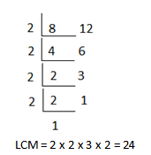

Explore and Discover!
Explore and Discover!
Carina baked puto. She wants to pack them in boxes of 8 and 12 pieces. What is the smallest number of pieces of puto that she can pack using the boxes?
To solve the problem, you need to find the least common multiple pr LCM of 8 and 12.
Here's how you do it.
› By listing Method
Write the multiples of 8: 8, 16, 24, 32, 40, 48, . . .
Write the multiples of 12: 12, 24, 36, 48, 60, . . .
Common multiples: 24, 48
Least common Multiple (LCM): 24
› By Prime Factorization
8 = 2 x 2 x 2
12 = 2 x 2 x 3
LCM: 2 x 2 x 2 x 3 = 24
› By continuous Division
• Notice that 24 is the least common multiple of 8 and 12. Therefore, the smallest number of pieces of puto that can be packed using the boxes is 24.
• You do not include 0 when dealing with common multiples.
Let's Practice!A. Find the common multiples and least common multiple (LCM) of each pair of numbers. Some of the multiples are already given.
1. 2 → 0, 2, 4, 6, 8, 10, 12, 14, 16, 18, 20, . . .
4 → 0, 4, 8, 12, 16, 20, 24, 28, 32, 36, 40, . . .
Common Multiples: 4, 8, 12, ...
Least Common Multiple (LCM): 4
2. 6 → 0, 6, 12, 18, 24, 30, 36, 42, 48, 54, 60, . . .
8 → 0, 8, 16, 24, 32, 40, 48, 56, 64, 72, 80, . . .
Common Multiples: 24, 48
Least Common Multiple(LCM): 24
3. 10 → 0, 10, 20, 30, 40, 50, 60, 70, 80, 90, 100, . . .
5 → 0, 5, 10, 15, 20, 25, 30, 35, 40, 45, 50, . . .
Common MultipleS: 10, 20, 30, 40, 50
Least Common Multiple(LCM): 10
4. 6 → 0, 6, 12, 18, 24, 30, 36, 42, 48, 54, 60, . . .
4 → 0, 4, 8, 12, 16, 20, 24, 28, 32, 36, 40, . . .
Common Multiples: 12, 36
Least Common Multiple(LCM): 12
5. 18 → 0, 18, 36, 54, 72, 90, 108, 126, 144, . . .
30 → 0, 30, 60, 90, 120, 150, 180, 210, 240, . . .
Common Multiples: 90
Least Common Multiple(LCM): 90